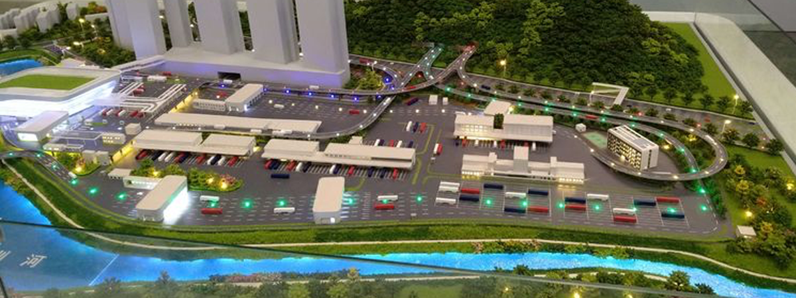
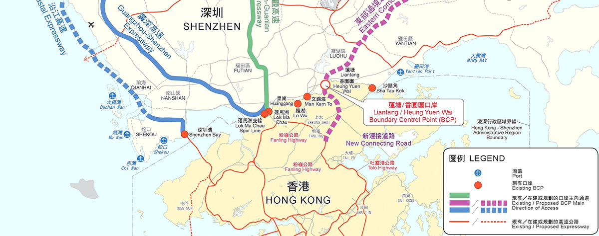

2018年国家主席习主席书记重要批示，支持香港成为国际创科中心。随着大湾区规划推进，社会各界对大湾区的期望和参与热情与日俱增， 纷纷寄语香港把握大湾区建设的历史机遇，善用中央惠港科技政策的“东风”，为本港创科发展注入强大动力，创造经济增长新动力。
同年五月，习主席对24名在港两院院士来信作出重要批示，支持香港成为国际创新科技中心， 为建设科技强国贡献力量，并着有关部门迅速做好贯彻落实工作，有序推进两地相关合作安排。
习主席的重要批示为香港科技界带来极大鼓舞，有份联署的中国科学院院士、港科院院长徐立之表示， 大湾区的运作模式，包括世界尖端的高等学府，加上研究、生产的基地，上中下游都有“包办”， 完美地将香港的科研成果，与大湾区的生产能力无缝接轨，有信心香港能在粤港澳大湾区中担任创科龙头角色。 促进香港同内地加强科技合作，支持香港成为国际创新科技中心，发挥内地和香港各自的科技优势， 为香港和内地经济发展、民生改善作出贡献，是在香港实行“一国两制”的题中应有之义。
香港拥有较雄厚的科技基础，拥有众多爱国爱港的高素质科技人才，这是我国实施创新驱动发展战略、 建设创新型国家的一支重要力量。要重视香港院士来信反映的问题，抓紧研究制定具体政策，合理予以解决， 以支持香港科技界为我们建设科技强国、为实现中华民族伟大复兴贡献力量。
集团于2016年意识到香港近二十年来的发展主要以金融及地产为主，但随著国家的高速发展， 深圳特区的GDP透过高科技发展亦追贴香港，有快将超越之势；集团开展了首个以科技产业地产为主题的项目， 集团取名为“创科港”。经过一年多的研究，在香港寸尺土之地，要发展产业地产成本实属过高，只能另辟途径， 研究香港农地发展产业地产的可行性。但香港农地大部份已由四大发展商持有，集团项目团队在不断努力下， 发掘到香港一个特殊地方并没有出售给香港地产商或任何投资者；此处正正位于香港与深圳连接的第七个口岸 － 莲塘口岸附近。
从深圳莲塘口岸过关到香港，步行10分钟便可到达香港国际创新科技中心；项目首期为20公顷(20万平方米)， 总规划为60公顷，是香港有史以来最大的农地收购。集团的高瞻远瞩，正正能配合香港政府的计划及国家的支持， 将此地块打做成大湾区国际创科中心，在收地的同时集团已获中国科学院国科金服、清华大学信息技術研究院、 清華大學互聯網產業硏究院、国研智库等多个著名科研机构签定合作意向，为香港引进国内外的高新科技企业，吸纳全球科研人材； 园区的设计以智能城市为主题，为科研工作人员提供全方位的商业娱乐及居住配套。香港政府当局披露， 本项目地为政府锐意发展的全新地区，预计发展总面积为720公顷，可容纳25.2万-35.5万人口，提供9.4万-13万个住 宅单位，以及21.5万就业岗位。